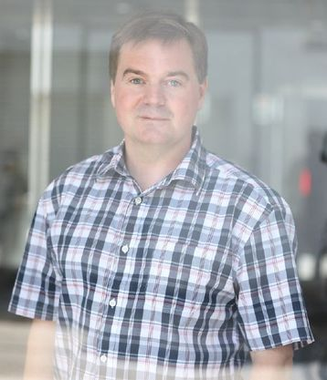

|
Frank Nielsen received his MSc. in parallel and distributed computing with first class honor from Ecole Normale Superieure of Lyon (France). He prepared his PhD on computational geometry (1996) at INRIA Sophia-Antipolis (France), and was awarded the PhD and HDR diploma from University of Cote d’Azur (France). He is a Senior Researcher and Fellow of Sony Computer Science Laboratories Inc. (Sony CSL, Tokyo). He currently conducts research on Structures, Dynamics, and Geometric Computing for AI and Information Theory. He taught algorithmics at Ecole des Mines (ISIA, France), C++/Linux at Polytech Nice (ESSI, France), Ecole Polytechnique (Palaiseau, France) visual computing (Charles River Media textbook, 2005), Java (Springer, 2009), and high-performance computing for data science (Springer UTICS textbook, 2016), and currently serves the following journals: Information Geometry (Springer), Transactions on Information Theory (IEEE), and Entropy (MDPI). Frank Nielsen co-organizes with Frederic Barbaresco the biannual conference Geometric Science of Information. |
 |